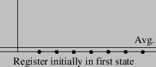
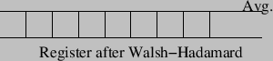
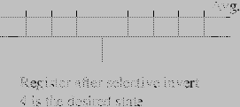
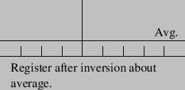

The following graphics illustrate the amplitudes of the varying states of a 3 bit quantum register undergoing the steps to Grover's algorithm:
Initially we prepare the register to be uniquely in the first state.

We then perform the Walsh-Hadamard transformation on the register, putting the register in a equal superposition of all 8 possible states.

We then perform the selective phase inversion, which switches the sign of the amplitude of the marked state, for the purposes of this illustration the marked state is the fourth state.

Finally we perform the inversion about average operation, which increases the amplitude of the state which was inverted in the previous step.
